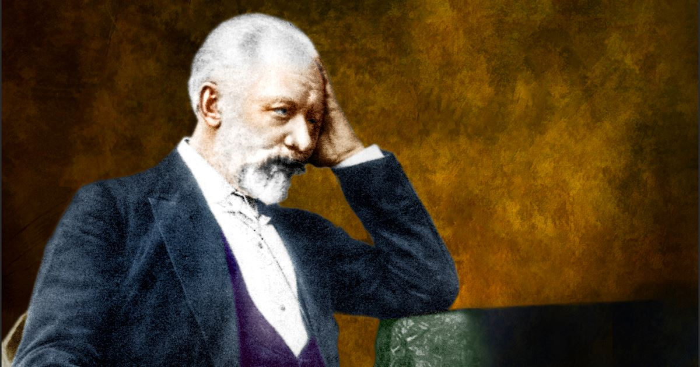

King Charles VI of France was famously afflicted by the glass delusion. He wore clothing that was reinforced with iron rods and did not allow his advisors to come near him due to his fear that his body would accidentally "shatter." He may have been the first known case of glass delusion.
Tchaikovsky
The neurotic behavior of the 19th-century Russian composer Peter Ilyich Tchaikovsky seems reminiscent of the glass delusion, centering as it did on his difficulties caused by his belief that his head would fall off while conducting if he did not hold his chin. While the legend may be exaggerated, it seems to have some basis in fact.
During Tchaikovsky's first attempt at conducting The Voyevoda in 1868, the composer "had felt that his head would fall sideways unless he fought to keep it upright." He mostly avoided conducting due to this affliction, expressing to his patroness "all my life I have been tormented by awareness of my inability to conduct. It has seemed to me there is something shameful and disreputable in not being able to stop myself trembling with fear and horror at the very thought of going out in front of the public with a baton." However, he later overcame his fear and successfully conducted The Enchantress in 1887.

Princess of Bavaria
Princess Alexandra of Bavaria believed that she had swallowed a glass piano as a child. She was convinced that the object remained inside her body from that point on, fearful that it might shatter and puncture her organs.
Georgios Hatzianestis
Georgios Hatzianestis, a Greek military officer, was commander of the Army of Asia Minor during the Greco-Turkish War in 1922. He failed to adequately respond to the Great Offensive that turned the war in the Turks' favour because he believed that his legs were made of glass and could shatter if he moved. For his failure, he was tried as an anti-Venizelist in the Trial of the Six (the only military leader to be so prosecuted) and was executed for high treason.